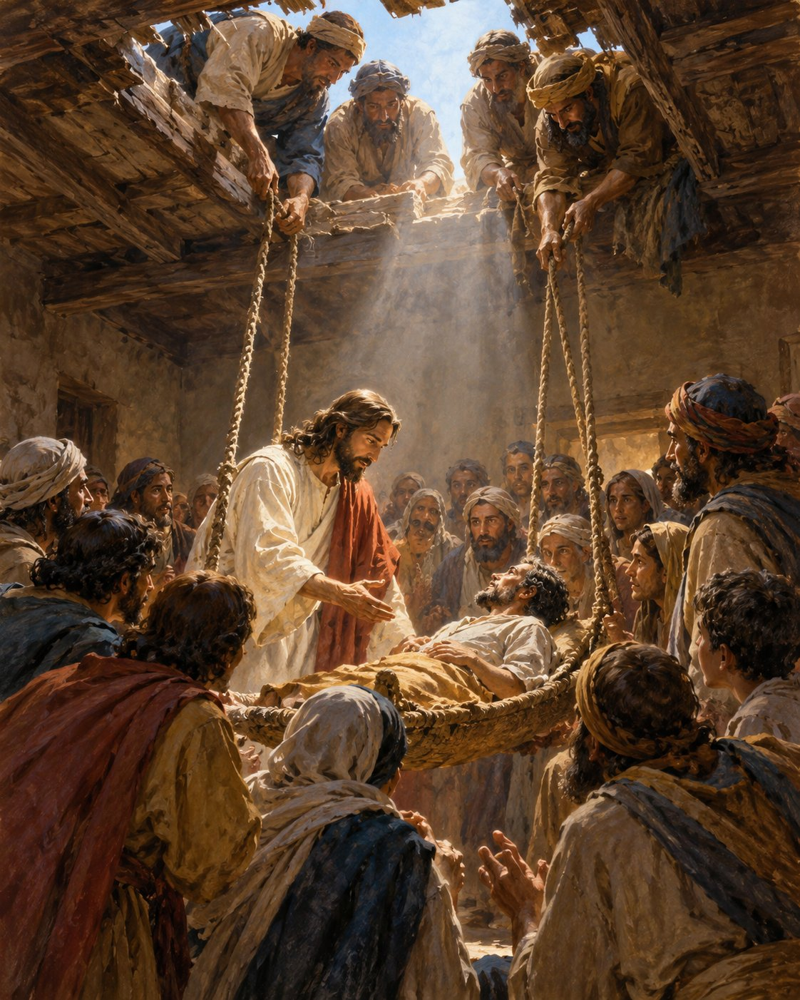

성경은 어떻게
읽어야 하는가?

삽화: 이 교재를 위해 새로 제작한 AI 성경 예술 이미지 · 역사적 명화가 아님
성경은 어떻게 읽어야 하는가?
말씀을 읽는 눈을 기르다
함께 읽을 본문: 느헤미야 8:8 / 마가복음 2:1–12
생각 열기: 같은 본문, 다른 읽기
한 사람이 마가복음 2장을 읽고 말합니다. “친구들이 포기하지 않아 기적이 일어났군요.” 다른 사람은 말합니다. “예수님께서 죄를 용서하실 권세가 있다는 것이 핵심이군요.” 두 사람 모두 이야기의 한 부분을 보았지만, 어느 관찰이 사건 전체의 중심에 더 가까울까요?
본문을 제대로 읽으려면 감동적인 장면 하나만 붙잡지 않고 이야기의 시작, 갈등, 예수님의 말씀, 사건의 결말을 함께 살펴야 합니다.
나의 경험을 나누어 봅시다.
1. 성경을 읽으며 뜻이 다르게 들렸던 경험이 있습니까?
2. 익숙한 본문을 읽을 때 놓치기 쉬운 것은 무엇일까요?
오늘의 배움
본문에 기록된 것을 자세히 봅니다.
앞뒤 문맥을 따라 중심 뜻을 찾습니다.
찾은 뜻과 자신의 생각을 구별합니다.
기억할 문장: “성경을 잘 읽는 첫걸음은 본문이 말하는 것을 먼저 듣는 일입니다.”
성경을 읽는 세 단계
창작 삽화 · 그림의 표정과 배치는 본문 기록이 아니라 예술적 상상입니다.
① 관찰 — 무엇이 기록되어 있습니까?
사람, 장소, 사건, 대화, 반복되는 말, 전환점을 찾습니다. 관찰은 상상으로 빈칸을 채우는 일이 아니라 본문에 있는 것을 발견하는 일입니다.
② 해석 — 그것은 무엇을 뜻합니까?
누가 누구에게 왜 말했는지, 앞뒤 내용과 어떻게 연결되는지 묻습니다. 이야기의 중심이 등장인물의 행동인지, 예수님의 말씀과 권세인지 구별합니다.
③ 응답 — 이 말씀 앞에서 어떻게 생각하고 살아야 합니까?
본문의 의미를 이해한 다음, 그것이 보여 주는 하나님과 예수님을 믿고 신뢰하는 응답을 생각합니다. 응답은 자신의 소망을 본문에 집어넣는 일이 아닙니다.
짧은 실습
“예수님께서는 그들의 믿음을 보셨습니다”(막 2:5의 내용).
관찰: 누구의 무엇을 보셨습니까? ______________________
해석: 이어지는 예수님의 말씀은 무엇입니까? ______________________
응답: 나는 예수님에 관하여 무엇을 새롭게 배웁니까? ______________________
중요: ‘관찰·해석·응답’은 성경 자체에 적힌 세 단계 명칭이 아니라, 본문을 주의 깊게 읽도록 돕는 학습 방법입니다.
첫 번째 눈: 무엇이 보입니까?
관찰할 때 찾는 다섯 가지
인물: 예수님, 중풍병자, 병자를 데려온 사람들, 서기관들, 모인 사람들
장소: 예수님께서 말씀을 전하시는 가버나움의 집
행동: 모임, 운반, 지붕을 열기, 죄 사함 선언, 질문, 치유
대화: 예수님의 선언, 서기관들의 속생각, 예수님의 반문
결말: 병자가 일어나고 사람들이 하나님을 찬양함
본문에서 찾아 표시해 봅시다.
1. 중풍병자를 몇 사람이 데려왔습니까? ________
2. 그들은 왜 문으로 들어갈 수 없었습니까? ______________________
3. 예수님께서 병자에게 처음 말씀하신 것은 무엇입니까? ______________________
4. 마지막에 사람들은 어떻게 반응했습니까? ______________________
한 번 더 생각하기
본문은 중풍병자가 병을 얻은 이유를 설명합니까? □ 예 □ 아니요
본문에서 말하지 않은 것은 말하지 않은 채 남겨 두는 것도 좋은 관찰입니다.
두 번째 눈: 이야기는 무엇을 말합니까?
마가복음 2:1–12에는 한 가지 질문이 점점 뚜렷해집니다. 예수님께서는 어떤 권세를 가지신 분이십니까?
사람들은 병자의 몸이 낫기를 기대했을 것입니다. 그런데 예수님께서는 먼저 죄 사함을 선언하셨습니다. 서기관들은 하나님 외에 누가 죄를 사할 수 있느냐고 마음속으로 문제를 제기했습니다. 예수님께서는 그들의 생각을 아시고, 사람들이 인자의 죄 사함 권세를 알게 하시려고 병자를 일으키셨습니다(2:10–12).
이야기의 흐름을 따라가면 치유는 그 자체로 중요한 사건이지만, 그 치유가 보여 주는 예수님의 권세가 본문의 핵심임을 발견합니다.
문맥 질문
예수님께서 먼저 죄 사함을 말씀하신 장면을 빼면 무엇을 놓치게 됩니까?
10절에서 예수님께서는 사람들이 무엇을 알게 되기를 원하십니까?
기억할 문장: “한 장면을 읽되, 그 장면이 전하는 중심 메시지를 놓치지 않습니다.”
앞뒤 문맥을 함께 읽기
성경의 한 단락은 혼자 떨어져 있지 않습니다
마가복음 1장 후반에는 예수님의 치유 사역과 그 소문이 널리 퍼지는 장면이 나옵니다(1:40–45). 2:1–12에서는 병자의 치유를 둘러싸고 죄를 사하는 권세의 문제가 전면에 등장합니다.
그 뒤로도 레위를 부르신 일, 죄인들과의 식사, 금식, 안식일을 둘러싼 논쟁이 이어집니다(2:13–3:6). 이 연속된 사건 속에서 예수님께서 누구이신지에 관한 질문과 반대가 점점 뚜렷해집니다.
문맥을 읽는 세 질문
1. 이 사건 직전에는 어떤 일이 일어났습니까?
2. 이 사건은 이후 이야기와 어떻게 연결됩니까?
3. 같은 주제나 갈등이 반복됩니까?
함께 읽기: 마가복음 1:40–45와 2:13–17의 소제목 또는 첫 부분을 찾아보십시오.
내가 발견한 연결: _________________________________________________
주의: 성경의 장과 절은 찾기 쉽게 하는 데 유익하지만, 이야기의 의미가 언제나 장 경계에서 끊어지는 것은 아닙니다.
성경 전체의 흐름 안에서 읽기
같은 사건을 묘사한 창작 삽화. 그림이 보여주는 것과 성경이 말하는 것을 구별해 보세요.
성경을 읽을 때는 바로 앞뒤의 문맥뿐 아니라 성경 전체가 증언하는 하나님과 구원의 이야기에도 귀를 기울입니다.
마가복음 2:7에서 서기관들은 죄를 사하는 일은 하나님께 속한다고 생각합니다. 이 질문은 구약에서 하나님께서 죄를 용서하시는 분으로 계시된 사실과 관련됩니다(출 34:6–7 참조). 예수님께서는 2:10에서 인자가 땅에서 죄를 사하는 권세를 가진다고 말씀하십니다.
따라서 이 사건은 단순한 의료적 기적의 기록을 넘어, 예수님의 정체성과 하나님의 구원 사역을 생각하게 합니다.
성경 연결 연습
출애굽기 34:6–7을 읽고, 하나님에 대하여 무엇을 말하는지 찾아보십시오.
마가복음 2:10을 읽고, 예수님께서 자신의 어떤 권세를 밝히시는지 적어 보십시오.
하나님의 성품: ______________________
예수님의 권세: ______________________
기억할 문장: “각 본문의 고유한 뜻을 먼저 살피고, 성경 전체의 증언과 연결합니다.”
본문 실습 ①: 관찰하기
마가복음 2:1–12를 직접 읽어 봅시다
자신의 성경으로 본문 전체를 천천히 읽으십시오. 두 번째 읽을 때는 등장인물에 동그라미, 예수님의 말씀에 밑줄, 이야기의 전환점에 별표를 해 보십시오.
장면을 네 부분으로 나누기
절 · 무슨 일이 일어났습니까?
1–2절 · __________________________
3–5절 · __________________________
6–9절 · __________________________
10–12절 · __________________________
본문에서 답 찾기
1. 예수님께서 5절에서 보신 것은 무엇입니까? __________________
2. 서기관들은 6–7절에서 무엇을 문제 삼습니까? __________________
3. 10절에 나오는 ‘알게 하려 함’의 대상은 무엇입니까? __________________
4. 12절에서 사람들은 누구를 찬양합니까? __________________
본문에 없는 내용 표시하기
□ 이 사람은 자신의 특정한 죄 때문에 병들었습니다.
□ 네 사람이 지붕을 통해 그를 예수님께 내려보냈습니다.
□ 병자는 예수님의 말씀을 듣고 일어났습니다.
위 문장 중 본문이 직접 말하지 않는 것을 찾아보십시오.
본문 실습 ②: 중심 뜻 찾기
핵심 질문: 예수님은 왜 병자를 일으키셨습니까?
2:10–12를 다시 읽어 보십시오. 예수님께서는 사람들이 인자가 땅에서 죄를 사하는 권세가 있다는 것을 알도록 병자에게 일어나라고 말씀하십니다. 치유는 그 권세를 눈에 보이게 드러냅니다.
함께 토론하기
A. 이 이야기의 중심을 “친구들이 열심히 했으니 반드시 기적을 받는다”로 정하면 어떤 문제가 생길까요?
________________________________________________________________
B. 5절의 ‘그들의 믿음’은 중요한 관찰입니다. 그러나 10절은 이야기의 중심을 어디로 이끌고 있습니까?
________________________________________________________________
C. 다음 두 문장 중 본문 중심에 더 가까운 것을 고르십시오.
□ 믿음이 있으면 모든 질병이 반드시 낫습니다.
□ 예수님께서는 치유를 통해 죄 사함의 권세를 드러내십니다.
오늘 내가 발견한 중심 문장
“이 본문은 _____________________________________________________ 을/를 보여 줍니다.”
말씀 앞에서 응답하기
성경을 바르게 적용한다는 것은 본문의 뜻을 나의 소원에 맞추는 일이 아닙니다. 본문이 보여 주는 예수님을 먼저 보고, 그분 앞에 자신의 생각을 비추어 보는 것입니다.
마가복음 2:1–12에서 우리는 사람들의 믿음과 수고를 보지만, 그보다 더 분명하게 죄를 용서하시는 예수님의 권세를 봅니다. 그러므로 우리는 단순히 기적의 방법을 배우는 데 그치지 않고 예수님을 누구로 믿고 있는지 질문할 수 있습니다.
나의 응답을 써 봅시다
나는 이 본문에서 예수님에 관해 무엇을 배웠습니까?
________________________________________________________________
예수님의 권세를 이해하는 것이 나의 신앙에 왜 중요합니까?
________________________________________________________________
본문이 약속하지 않는 것을 약속이라고 생각한 적은 없습니까?
________________________________________________________________
함께 기억할 경계: 이 본문은 모든 질병이 개인의 특정 죄 때문에 발생한다거나, 믿음이 있으면 반드시 치유된다고 가르치지 않습니다.
배움 정리: 좋은 성경 읽기의 습관
오늘 우리는 성경을 읽을 때 관찰 → 해석 → 응답의 순서가 도움이 된다는 것을 배웠습니다.
단계 · 물어야 할 질문 · 마가복음 2장의 예
관찰 · 무엇이 기록되어 있습니까? · 네 사람이 병자를 예수님 앞으로 데려왔습니다.
해석 · 왜 이 장면이 중요합니까? · 예수님의 죄 사함 권세가 드러납니다.
응답 · 무엇을 믿고 생각해야 합니까? · 예수님의 정체성과 권세를 신뢰하는 의미를 묻습니다.
스스로 점검하기
□ 사람·장소·사건을 먼저 살폈습니다.
□ 앞뒤 문맥을 확인했습니다.
□ 본문이 직접 말하는 것과 나의 추측을 구별했습니다.
□ 한 장면보다 이야기의 중심을 찾으려 했습니다.
□ 적용 전에 본문의 뜻을 생각했습니다.
한 문장 고백
“말씀을 읽을 때, 내가 원하는 답보다 주님께서 보여 주시는 진리를 먼저 듣겠습니다.”
한 주간의 성경 읽기
이번 주에는 직접 읽어 보세요
월요일 — 마가복음 2:1–5
등장인물과 행동을 표시하고, 예수님의 첫 말씀을 찾아보십시오.
화요일 — 마가복음 2:6–12
서기관들의 질문과 예수님의 응답을 비교하십시오.
수요일 — 마가복음 2:13–17
예수님께서 누구를 부르시는지, 어떤 반응이 나오는지 관찰하십시오.
목요일 — 마가복음 2:18–22
사람들의 질문과 예수님의 말씀을 나누어 적어 보십시오.
금요일 — 마가복음 2:23–28
논쟁의 주제를 찾고, 예수님의 결론을 표시하십시오.
토요일 — 마가복음 3:1–6
갈등이 어디까지 발전하는지 살펴보십시오.
주일 — 한 주간 돌아보기
“마가복음 2:1–3:6의 사건들을 묶는 질문은 무엇입니까?”
나의 한 줄 발견: __________________________________________________
다음 시간에 나눌 질문: “성경의 큰 이야기는 어떻게 이어집니까?”